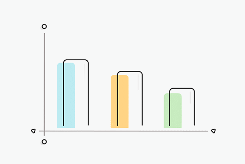

Understand The Imapct Of Your Product Features
Collects product feature usage from your user and build custom reports to uncover insights and opportunities

Collects product feature usage from your user and build custom reports to uncover insights and opportunities
Why TrackZen?

By utilizing our application, a business can enhance user productivity effectively while upholding user privacy. TrackZen will capture screenshots at 30-minute intervals and utilize an AI algorithm to analyze them, gathering data on user digital activity. This enables concerned parties to gauge employee productivity and implement measures to enhance output, aligning with organizational objectives.

As a standard setting, TrackZen observes the typical office hours of a company, typically from 9 am to 5 pm (adjustable based on needs), and tracks employee screen time across various social media platforms and applications. It captures screenshots every 30 minutes, which are then processed by our AI to provide an approximate overview of user digital engagement.
Based on insights gathered by our AI, TrackZen generates automated reports for individual employees, accessible to both employees and relevant management personnel. This allows management to implement necessary measures to enhance productivity. Moreover, TrackZen ensures the confidentiality of each employee's report, accessible solely to authorized parties.
Ready to try it out?
Learn more about this